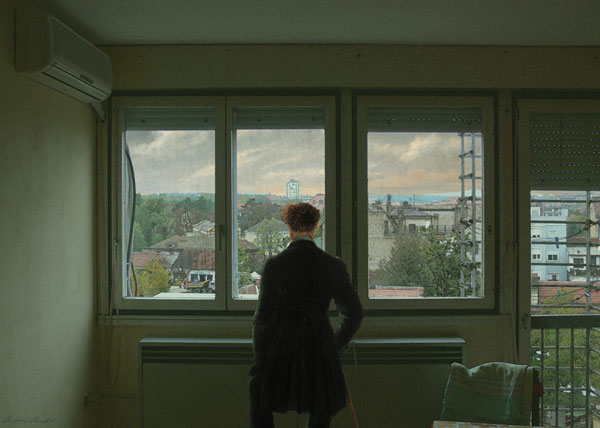

IMAGES OF THE DAY 89
12/01/2023 - 12/10/2023

12/01/2023
Mixed Technology
Reproductions of Nonexistant Paintings
The Wanderer Above the Sea of Mist by Caspar David Friedrich
by Vladimir Rankovic
Click image to access artist's full exhibit
12/02/2023
Mixed Technology
Digital Paintings
Matisse
by Mavi Roberto
Click image to access artist's full exhibit
12/03/2023
Mixed Technology
3D Art
The Days of Yore
by Kees Roobol
Click image to access artist's full exhibit
12/04/2023
Mixed Technology
Guerrilla Art: Suggestive Landscapes
Sub and Life 1
by Jeffrey Z. Rothstein
Click image to access artist's full exhibit

12/05/2023
Mixed Technology
Sun and Life 1 to 8
Sun and Life 1
by Sibel Sancar
Click image to access artist's full exhibit

12/06/2023
Mixed Technology
Horses
Flaming Havasu Cowboy
by Ron Sangha
Click image to access artist's full exhibit

12/07/2023
Mixed Technology
Illustrations
Coltrane
by Marcos Schmidt
Click image to access artist's full exhibit
12/08/2023
Mixed Technology
Digital Painting
Picturesque Junk Yard
by Helga Schmitt Pullach
Click image to access artist's full exhibit

12/09/2023
Mixed Technology
Representational
Fragile World
by Julia Scorupsky
Click image to access artist's full exhibit

12/10/2023
Mixed Technology
Freedom Wave
by Rod Seeley
Click image to access artist's full exhibit

BACK TO IMAGES OF THE DAY 88
NEXT